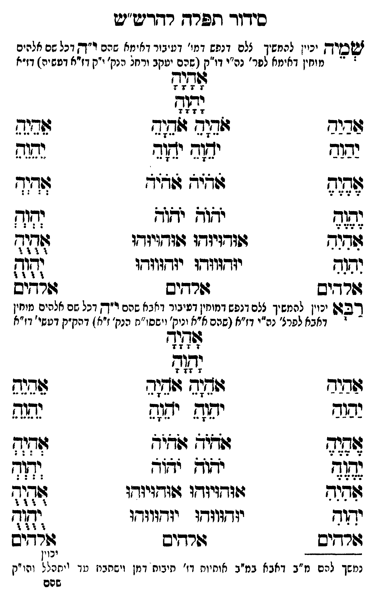

Neue Klartextfassung
שמיה [יכוין להמשיך ל"ם דנפש דמו' דעיבור דאימא שהם ר"ה דגל עם אלהים מוחין דאימא לפר' נה"י דו"ק (שהם יעקב ורחל הנק' ו"ק דז"א דעשיה) דז"א. [?]] אָהָיָהָ יָהָוָהָ === טבלה === [טור ימין] אַהַיַהַ יַהַוַהַ אֶהֶיֶהֶ יֶהֶוֶהֶ [טור אמצעי] אֹהֵיָהֵ אֹהֵיָהֵ יֹהֵוָהֵ יֹהֵוָהֵ אֹהֹיֹהֹ אֹהֹיֹהֹ יֹהֹוֹהֹ יֹהֹוֹהֹ [טור שמאל] אֵהֵיֵהֵ יֵהֵוֵהֵ אְהְיְהְ יְהְוְהְ === סוף טבלה === === טבלה === [טור ימין] אִהִיִהִ יִהִוִהִ [טור אמצעי] אוּהוּיוּהוּ אוּהוּיוּהוּ יוּהוּווּהוּ יוּהוּווּהוּ [טור שמאל] אֻהֻיֻהֻ יֻהֻוֻהֻ === סוף טבלה === אלהים אלהים אלהים רבא [יכוין להמשיך ל"ם דנפש דמוחין דעיבור דאבא שהם ר"ה דגל עם אלהים מוחין דאבא לפר' נה"י דו"ק (שהם ז"א ונוק' ישסו"ת הנק' ו"ק ז"א) דהיכל ק"ק דעשיה דז"א. [?]] אָהָיָהָ יָהָוָהָ === טבלה === [טור ימין] אַהַיַהַ יַהַוַהַ אֶהֶיֶהֶ יֶהֶוֶהֶ [טור אמצעי] אֹהֵיָהֵ אֹהֵיָהֵ יֹהֵוָהֵ יֹהֵוָהֵ אֹהֹיֹהֹ אֹהֹיֹהֹ יֹהֹוֹהֹ יֹהֹוֹהֹ [טור שמאל] אֵהֵיֵהֵ יֵהֵוֵהֵ אְהְיְהְ יְהְוְהְ === סוף טבלה === === טבלה === [טור ימין] אִהִיִהִ יִהִוִהִ [טור אמצעי] אוּהוּיוּהוּ אוּהוּיוּהוּ יוּהוּווּהוּ יוּהוּווּהוּ [טור שמאל] אֻהֻיֻהֻ יֻהֻוֻהֻ === סוף טבלה === אלהים אלהים אלהים
Original gegen neue OCR · Niqqud für Vergleich ausgeblendet
Original
שמיה [יכוין להמשיך ל"םK169-001 דנפש דמו'K169-002 דעיבור דאימאK169-003 שהם ר"ה דגל עםK169-004 אלהים ∅K169-005 מוחין דאימא לפר' נה"י דו"ק (שהם יעקב ורחל הנק' ו"קK169-006 דז"א דעשיה) דז"א. ] אהיה יהוה === טבלה === [טור ימין] אהיה יהוה אהיה יהוה [טור אמצעי] אהיה אהיה יהוה יהוה אהיה אהיה יהוה יהוה [טור שמאל] אהיה יהוה אהיה יהוה === סוף טבלה === === טבלה === [טור ימין] אהיה יהוה [טור אמצעי] אוהויוהו אוהויוהו יוהוווהו יוהוווהו [טור שמאל] אהיה יהוה === סוף טבלה === אלהים אלהים אלהים רבא [יכויןK169-007 להמשיך ל"םK169-008 דנפש דמוחין דעיבורK169-009 דאבא שהם ר"ה דגל עם אלהים מוחיןK169-010 דאבא לפר'K169-011 נה"י דו"קK169-012 (שהם ∅K169-013 ז"א ונוק' ישסו"ת הנק' ו"ק ז"א) דהיכל ק"ק דעשיה דז"א. ] אהיה יהוה === טבלה === [טור ימין] אהיה יהוה אהיה יהוה [טור אמצעי] אהיה אהיה יהוה יהוה אהיה אהיה יהוה יהוה [טור שמאל] אהיה יהוה אהיה יהוה === סוף טבלה === === טבלה === [טור ימין] אהיה יהוה [טור אמצעי] אוהויוהו אוהויוהו יוהוווהו יוהוווהו [טור שמאל] אהיה יהוה === סוף טבלה === אלהים אלהים אלהיםK169-014
OCR · fehlbar
סידוד תלרדג ר-דיש"ש זשטיך יניין לרמשיך צלםK169-001 דנפש דמי'K169-002 דעיבור דאיחאK169-003 שהם ו"ךץ דכל שםK169-004 אלהים ' -K169-005 מוחין דאימא לפר' נה"י דו"ק (שהם יעקב ורחל הנק' יקK169-006 דז"א דטשיר) דז"א לללל [זלש דגב ז(ד( פג. 2לל יב( ישב ידו נשגפ זב יי גזזי צדיך (ה(- ישגא יאוך נדוך זודגנש גפזד(יוחו 4(זד[[יודו ל313 ובגד יזדזוודו י(דזוזדו לל3 גפר יש בשרדשיש גשרדיש 7277 ינויןK169-007 להמשיך צלםK169-008 דנפש דמוחין דטיבורK169-009 דאבא שהם ר"ךץ דכל שם אלפים מיחין - ' -K169-010 דאבא לפרצ'K169-011 נה"י דז"אK169-012 (שהם א"א וניק' וישסז"נז הנק'K169-013 ז"א ) דהק"ק דטשי' וז"א [ז[[לזז ל38 ששיש ג(ד(ג ושוד זבנת בנ יפפ ישנה ישוש לאגג לכ לגב זשפ לל ידוש י"ד זז שגחנח ד(נ(ד[גי:ד(ו דוגדזגיודן: צדד יאור יגדש(וגדגו יגדווגדזו יתיד שרדיס ב(רדשיש ללדדיס נמשך להם מ"ב דאבא במיב אותיות דז' תיבות דמן וישחצין טד לל והו יק שפםK169-014